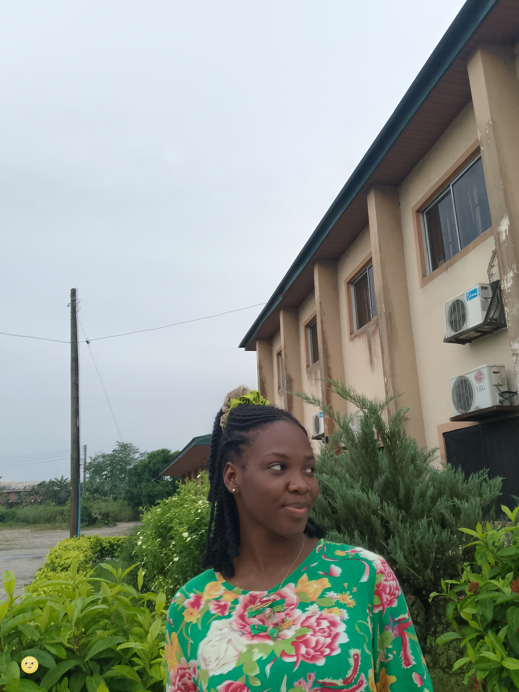
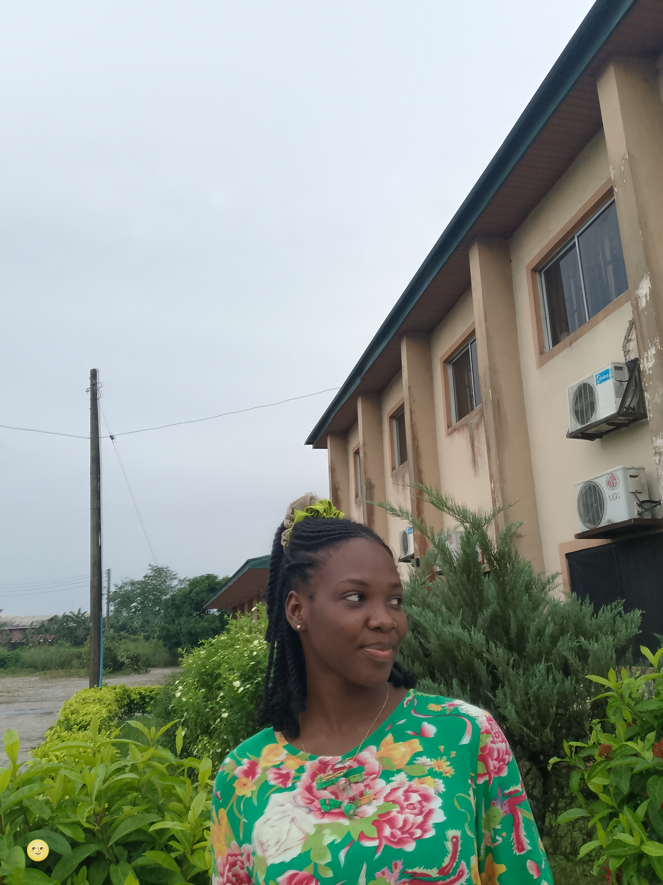

🥰🥰🥰🥰🥰
Every love story begins with a moment…
Ours began the day i caught myself staring at you on the sand-dump in Amassoma.......
🥰🥰🥰🥰🥰
Ours began the day i caught myself staring at you on the sand-dump in Amassoma.......
We shared a pics on our way to Bayelsa, and this very pics will be treasurered for ever..
These were not just image shared, it was the time i could see through your heart and fell in love with your personality


The gift of us started casually, after Bayelsa, was the endless night classes, bonding and Loving sincerely.
Like everyone we meet, we share a memory with them. But the memories i share with you are not just memories, purposeful encounters. Being my best friend when life was weighing, when i was confused about a lot of things, being a support, an ear that listens, a presence i felt the most.

 



The quiet understanding we shared, where we both loved to learn more on how to make each other happy while not losing ourselves in the process
The heavy heart we shared when one of us was in distress and is confused, when the stress and pressure of meeting up weighs us down. We tried our best to make the other person feel seen and heard.


The little things about life that made loving seamless and amazing.
The emotional truth about our relation this far is both of us have been hurt, none has suffered most or less. we are just learning how to trust someone, EVEN THOUGH WE HAVE THE OPTION TO WALK AWAY!


Whenever it gets tough, remember this conversation during our 2nd year anniversary
Funmi: Hey baby, 💗
This last two years has been about the best years of my life and you were a key
player in it. Thank you so much for all the beautiful experiences, timeless
memories, locked-in habits, teachings, stretching and connections. Thank you
for loving me effortlessly and bringing out the very best in me. You have
made me see through your eyes -a million times in these past two years- just
how amazing I am and how much I can be. You've thought me to cherish myself
better,...infact, to do *IT*(everything) better; love, grow,read, discern,
connect... Thank you for being my life's mirror ❤️
Thank you for seeing me, hearing me, putting me before yourself and watching
out for me even when it seems difficult to do. You are an amazing person,
you are really kind. Two years can not be penned down completely but in all,
you are the perfect match for me, I'm proud to be your best friend and
girlfriend, no one can do it better than you. I cherish you so much and I'm
glad we've come this far 🥰💕.
I want you to know the many times you think "you're not doing enough",
that you're doing your best and your best is amazing. Look at how much
I've grown academically, emotionally,...how every aspect of my life is
continually in check and I don't have to even do it (even if I still do
because I see you getting better and I must step my game too. Not because
it's a competition but because best friends twin) because I know you're
right there for me🤍✨
I'm proud of how much you're ever ready to grow and learn, it's one big
reason I'm sticking around (forever), 😂. You are doing great and I
appreciate you.
Thank you for making me a better person and for continually pushing to be
the best (even though to me, you are perfect...almost always). The timeless
memories, laugh, experiences, love, and the ones to come, I'm grateful for
them and more grateful I get to have them with you 😌💝
HAPPY 2ND ANNIVERSARY BABE 🎊 🎉
Here's to forever ❤️♾️🥂
Saint: Hey Babe,
This is my love letter to you, to mark the continuation of a journey that
looked like mythology to many. It's been two years filled with a lot of
miracles, emotions, amazing memories, shortcomings, funky behaviors, offending
and defending days, spiritual and less spiritual days, romantic and nonsense
behavior (that one you will never miss it), busy and free days, risky and
blossoming days. These two years saw the best and worst of ourselves. And
still we are here already making history many 60 yrs married couples haven't
been able to achieve.
I celebrate us today, às this is both a formal and informal way of making
sure you are aware that this boy loves the hell out of you and is ready to do
anything for you.
First I appreciate you for accepting to be my Best friend and Girlfriend
exactly today 2 years ago, I can only remember how I felt after you said yes,
and took the flower from me. I will love to do that again and again. Bc you
deserve all of the happiness I can give and more than I have now.
No one accepts to date a boy like me, e no dey normal to do. But you looked
beyond the no-fine face and no-fine pocket and believed my promise of a better
friendship. Thank you.
Oluwafunmilayo was the name you told me you're called. But when I searched
deeper, I found out that this is just a cheat code God used. I asked God for
this inner joy and satisfaction, and he hid it inside a human being.
Funmi - Given to me, Ayo - Joy (Streams of Joy), Oluwa - My God, My God..😊😊
e no funny again. But I just told God "I saw what you did there"
Thank you for being a pillar I stood on and grew with all these years. Only God
in Heaven can reward you enough for your Love and the security you brought
into my life even when it should have been the other way round. And you have
never complained.
Thank you for your patience with me, thank you for your care for me, thank you
for being a normal woman with all the disturb disturb and not easy to predict
behaviors. I'm happy I pulled this one for my self, so at least when men gather
to talk about the woman in their lives, I can have something to talk about.
I love the drama, I love the peace, I love the 'are you ok?', and I love the
'babe we will pull this through'. My heart has been heavy in thoughts of tears
and Joy. Life would have been different if you had said NO to me. So thank you baby.
To continue serving my purpose in your life is what I really want to continue
doing. I want to continue growing so I can have what to teach you. I want to
continue developing so I can know what to do at all times to make you the
happiest Girl on earth. Make your mama envy you join. I want to be there and
see you become the Great image God had in mind bringing you into this world.
Distant but you're close to my heart and will always stay there I Promise.
I promise to be a source of peace and accommodate your newly updated dramas,
I'll be a really man and be your shield when you are emotionally down.
I'll be right here.
May God in Heaven preserve what we have and has built so nothing breaks this
bond in Jesus Name...
HAPPY 2 YEARS into our Relationship, and not many more numbers until marriage
in Jesus Name.
Amen

Please kindly Tap on the Yes Button, Miss Funmilayo as there is only one option for us here..